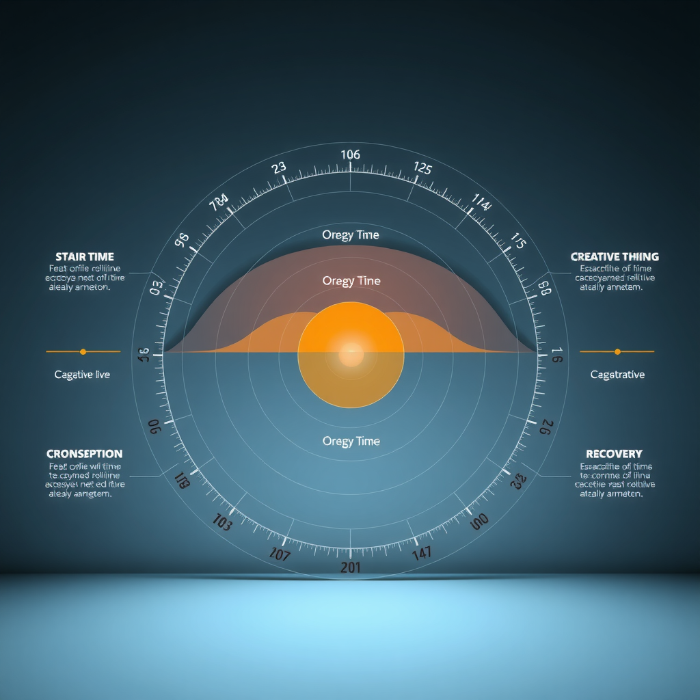
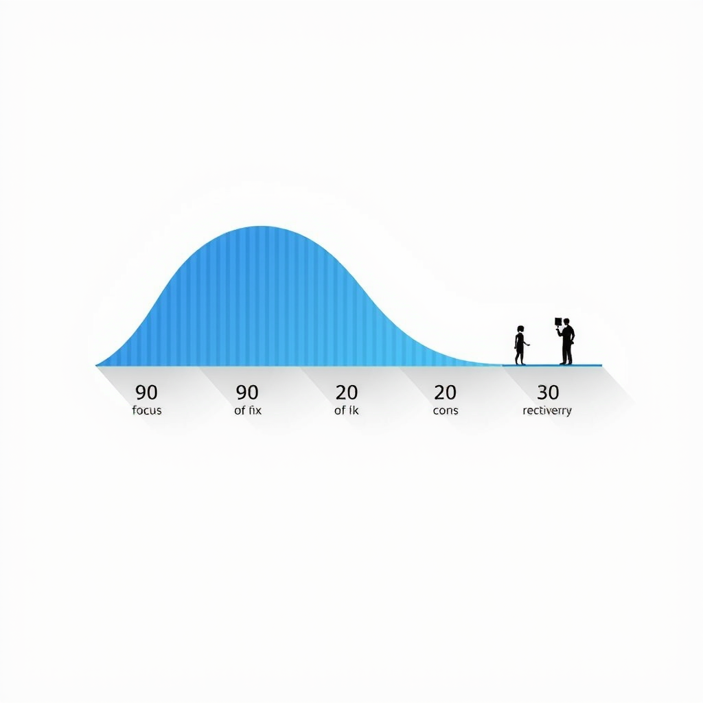
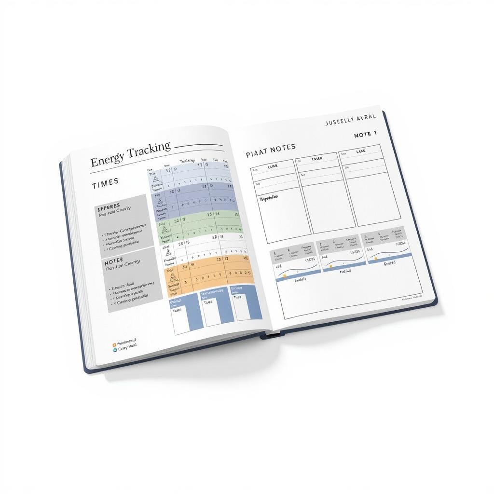
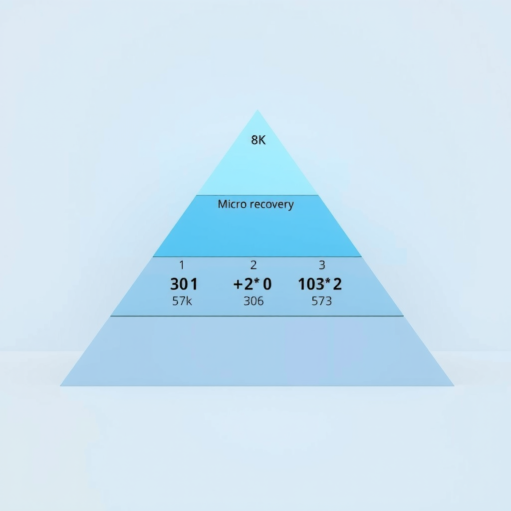

The Science of Temporal Architecture: Advanced Time Blocking for Peak Performance
Discover how top performers across industries structure their days using advanced time blocking strategies that maximize cognitive design principles while preventing burnout.
In the age of cognitive speed, where digital mindfulness meets human efficiency, the way we structure our time has become the ultimate competitive advantage. Time blocking isn't just about filling calendar squares—it's about designing flow states, architecting attention, and creating neural pathways that support superhuman productivity without sacrificing mental well-being.
This comprehensive guide reveals the temporal architecture strategies used by elite performers, backed by neuroscience and refined through years of intelligent interaction with our cognitive limits. Whether you're an entrepreneur, creative professional, or knowledge worker, these advanced techniques will transform how you approach each day.
Understanding Temporal Architecture: Beyond Basic Time Blocking
Traditional time blocking treats hours as uniform containers—a fundamental misunderstanding of how human cognition actually works. Advanced temporal architecture recognizes that our mental capacity fluctuates throughout the day in predictable patterns, influenced by circadian rhythms, ultradian cycles, and the architecture of attention itself.
The concept of temporal architectureemerged from research in cognitive design and neuro-interface studies. It's the practice of structuring time not just by task, but by the cognitive state required for optimal performance. This approach aligns with our natural focus architecture, creating conditions where flow systems can emerge spontaneously.
Top performers don't just schedule tasks—they design cognitive environments. They understand that a 9 AM strategy session requires different neural resources than a 3 PM email processing block. This awareness forms the foundation of mental optimization and sustainable high performance.
The key insight:time is not the resource we're managing—attention is. Every moment of your day should be intentionally designed to support the specific type of cognitive work it contains, creating a seamless flow from one mental state to another.
The Three Pillars of Advanced Time Blocking
1. Cognitive Load Mapping
The first pillar involves mapping your tasks not by urgency or importance, but by the type of cognitive load they require. Design intelligence research has identified four primary cognitive modes that demand different neural resources:
- Deep Work Mode– Complex problem-solving, strategic thinking, creative synthesis. Requires 90-120 minutes of uninterrupted focus. Best scheduled during peak cognitive hours (typically 2-4 hours after waking).
- Collaborative Mode– Meetings, brainstorming, team coordination. Benefits from social energy and works well in mid-morning or early afternoon when communication skills peak.
- Administrative Mode– Email processing, scheduling, routine tasks. Ideal for energy valleys (post-lunch dip or late afternoon) when complex thinking is challenging.
- Learning Mode– Skill acquisition, reading, course work. Most effective in late morning or early evening when the brain is primed for information consolidation.
Elite performers create visual maps of their week, color-coding blocks by cognitive mode. This practice, rooted in focus architecture principles, ensures that high-value deep work never gets scheduled during low-energy periods—a common mistake that sabotages productivity.
The superhuman approach: audit your last two weeks of work. Identify which tasks energized you and which depleted you. Notice patterns in timing. This data becomes the blueprint for your optimized temporal architecture.
2. Ultradian Rhythm Alignment
While most people know about circadian rhythms (our 24-hour biological clock), few leverage ultradian rhythms—the 90-120 minute cycles of alertness that repeat throughout the day. These cycles are fundamental to human efficiency and form the basis of natural flow systems.
Research in cognitive design shows that our brains naturally move through periods of high focus followed by necessary recovery. Fighting this pattern leads to diminishing returns and eventual burnout. Advanced time blocking workswiththese rhythms, not against them.
The protocol top performers use:
The 90-20 Protocol
• 90 minutesof focused work on a single cognitive mode
• 20 minutesof intentional recovery (not scrolling—actual rest)
• Repeatfor 2-3 cycles maximum before a longer break
• Neverschedule more than 4 deep work blocks in a single day
This rhythm-aligned approach prevents the cognitive fatigue that comes from marathon work sessions. It's not about working more hours—it's about designing intelligent interaction between effort and recovery, creating sustainable mental optimization.
During the 20-minute recovery windows, elite performers engage in activities that genuinely restore cognitive resources: walking, stretching, meditation, or even power naps. What they don't do: check email, scroll social media, or engage in any screen-based activity that continues to tax attention systems.
3. Transition Design
Perhaps the most overlooked aspect of temporal architecture is the spacebetweenblocks. Cognitive research reveals that abrupt context switching can cost up to 40% of productive time as the brain struggles to reorient. This is where transition design becomes critical.
Advanced practitioners build 10-15 minute transition buffers between different cognitive modes. These aren't wasted minutes—they're essential architecture that allows the brain to close one mental workspace and open another efficiently. Think of them as neural hallways connecting different rooms of focus.
Effective transition rituals used by top performers:
- The Close-Out– Spend 5 minutes documenting what you accomplished and what remains. This creates cognitive closure and prevents mental loops.
- The Reset– Physical movement to signal a state change. Walk to a different location, do 10 push-ups, or step outside briefly.
- The Prime– Review the next block's objectives and visualize successful completion. This pre-loads the relevant neural networks.
- The Breathe– 2-3 minutes of box breathing (4-4-4-4 pattern) to reset the nervous system and clear residual mental clutter.
These micro-rituals might seem insignificant, but they're the difference between a day of fragmented attention and one of sustained flow. They represent the pinnacle of digital mindfulness applied to time management—small interventions with outsized impact on human efficiency.
Building Your Personal Temporal Architecture
Theory becomes powerful only through implementation. Here's how to construct your own advanced time blocking system, customized to your unique cognitive patterns and professional demands.
Week 1: The Audit Phase
Before optimizing, you must understand your current state. Spend one week tracking your energy and focus levels every 90 minutes. Use a simple 1-10 scale. Note what you're working on and how it feels. This creates your personal cognitive baseline—the foundation of all mental optimization.
Pay special attention to:
- When do you feel most mentally sharp?
- When does your energy naturally dip?
- Which tasks drain you versus energize you?
- How long can you sustain deep focus before quality degrades?
- What activities genuinely restore your mental resources?
This data is gold. It reveals your unique neuro-interface patterns—the specific ways your brain interacts with different types of work at different times. No generic template can match the power of this personalized insight.
Week 2: The Design Phase
Armed with your audit data, begin designing your ideal week. Start with your non-negotiables: meetings you can't move, family commitments, essential routines. These are your temporal anchors.
Next, place your deep work blocks during your peak cognitive hours. These are sacred—protect them fiercely. Most people can sustain 2-3 deep work blocks per day maximum. Schedule them when your audit showed highest energy and focus.
Then fill in collaborative blocks during your social energy peaks (often mid-morning or early afternoon). Administrative tasks go in your natural energy valleys. Learning blocks work well in late morning or early evening.
Pro Tip: The Theme Day Strategy
Some elite performers take temporal architecture to the next level by assigning themes to entire days. Monday might be "Strategy Day" (all deep work), Tuesday "Collaboration Day" (meetings and teamwork), Wednesday "Creation Day" (content and design work). This reduces context switching across days and creates powerful momentum within each cognitive mode.
Remember: this is a design, not a prison. Build in flexibility buffers—unscheduled blocks that can absorb overflow or unexpected opportunities. Rigid systems break; adaptive systems evolve. The goal is intelligent interaction with your schedule, not blind adherence.
Week 3-4: The Refinement Phase
Implementation reveals what theory cannot predict. As you live your designed schedule, pay attention to friction points. Where does the system feel forced? Where does it flow naturally? This feedback is crucial for creating sustainable temporal architecture.
Common adjustments in the refinement phase:
- Extending transition buffers– Many people initially underestimate how much time they need between modes
- Reducing deep work blocks– Quality trumps quantity; three excellent 90-minute sessions beat five mediocre ones
- Adding recovery rituals– The 20-minute breaks need structure or they disappear into distractions
- Protecting morning hours– For most people, the first 2-4 hours after waking are cognitive gold—guard them ruthlessly
- Building batch days– Grouping similar tasks (all calls on Tuesday, all admin on Friday) reduces setup costs
The refinement phase never truly ends. Your optimal temporal architecture will evolve as your work changes, your skills develop, and your life circumstances shift. The system should serve you, not the reverse. This is the essence of superhuman productivity—continuous adaptation guided by self-awareness.
Advanced Techniques: Beyond the Basics
Energy Stacking
Elite performers don't just schedule tasks—they stack energy-generating activities before demanding work. This might mean a 20-minute workout before a crucial presentation, or a 10-minute meditation before a complex problem-solving session. They understand that cognitive performance isn't just about time management; it's about state management.
The principle: you can't think your way into a better state, but you can move, breathe, or rest your way there. Physical interventions change brain chemistry faster than mental ones. This is applied cognitive design at its finest.
Experiment with pre-work rituals that prime your nervous system for the task ahead. Cold showers before deep work. Walking meetings for creative brainstorming. Standing desks for administrative tasks. The body-mind connection is a powerful lever for mental optimization.
The Power of Negative Space
Counterintuitively, the most productive people don't fill every minute. They intentionally leave empty space in their calendars—what temporal architects call "negative space." These unscheduled blocks serve multiple functions: buffer for overflow, space for serendipity, room for reflection.
Research in flow systems shows that breakthrough insights rarely occur during scheduled thinking time. They emerge in the gaps—during walks, showers, or idle moments. By over-scheduling, we eliminate the cognitive breathing room where creativity lives.
The recommendation: keep 20-30% of your week unscheduled. This isn't laziness; it's strategic capacity. It's the difference between a system running at 100% (brittle, prone to failure) and one running at 70-80% (resilient, adaptive, sustainable).
Think of your calendar like a well-designed room. The furniture (scheduled blocks) matters, but so does the space between pieces. Negative space isn't empty—it's potential. It's where human efficiency meets digital mindfulness, creating room for the unexpected insights that drive real innovation.
Attention Residue Management
When you switch tasks, your attention doesn't immediately follow. Part of your cognitive capacity remains stuck on the previous task—a phenomenon called "attention residue." This invisible tax on mental performance can reduce effectiveness by 20-40% in the minutes following a context switch.
Advanced time blockers combat this through deliberate closure rituals. Before ending a work block, they spend 5 minutes:
- Writing down exactly where they stopped and what comes next
- Identifying any open loops or unresolved questions
- Physically closing all related tabs, documents, and applications
- Taking three deep breaths while visualizing the work as "complete for now"
This ritual creates psychological closure, allowing attention to fully disengage. It's a small practice with profound impact on focus architecture—the difference between carrying mental baggage all day versus moving cleanly between cognitive states.
The superhuman insight: your brain is not a computer that instantly switches programs. It's a biological system that needs transition time. Honor this reality, and your productivity will soar. Fight it, and you'll spend your days in a fog of partial attention.
Preventing Burnout: The Sustainability Imperative
All the temporal architecture in the world means nothing if it leads to burnout. The goal isn't to squeeze more productivity from every hour—it's to create sustainable high performance over years and decades. This requires building recovery into the system from day one.
Elite performers understand that rest isn't the absence of work—it's a different type of work. Recovery is active, intentional, and scheduled with the same rigor as productive tasks. They don't "find time" to rest; they architect it into their temporal design.
The Recovery Hierarchy
Four Levels of Recovery
Micro-Recovery (Every 90 minutes)
5-20 minute breaks between work blocks. Physical movement, hydration, brief meditation. Prevents acute cognitive fatigue.
Daily Recovery (Every evening)
1-2 hours of genuine downtime. No work-related activities. Hobbies, social connection, light exercise. Restores baseline cognitive capacity.
Weekly Recovery (Every 7 days)
One full day of rest. Complete disconnection from work systems. Nature, family, creative pursuits. Prevents cumulative fatigue.
Quarterly Recovery (Every 12 weeks)
3-7 days of extended rest. Travel, retreat, or staycation. Deep recovery that allows for reflection and recalibration. Prevents long-term burnout.
Notice the pattern: recovery operates at multiple timescales, each serving a different function. Miss any level, and the system becomes unstable. This is the architecture of attention applied to rest—structured, intentional, non-negotiable.
The most successful practitioners treat recovery blocks with the same respect as client meetings. They're scheduled, protected, and honored. This isn't indulgence; it's intelligent system design. You can't sustain superhuman performance without superhuman recovery.
Implementation: Your 30-Day Transformation
Knowledge without action is merely entertainment. Here's your concrete 30-day plan to implement advanced temporal architecture and transform your relationship with time.
Days 1-7: Foundation
- Track energy levels every 90 minutes
- Identify your peak cognitive hours
- Categorize all tasks by cognitive mode
- Establish one transition ritual
- Schedule your first deep work block
Days 8-14: Structure
- Design your ideal week template
- Implement the 90-20 protocol
- Add transition buffers between blocks
- Protect 2-3 deep work blocks daily
- Schedule all four recovery levels
Days 15-21: Refinement
- Adjust block lengths based on experience
- Experiment with energy stacking
- Add closure rituals to prevent attention residue
- Identify and eliminate time leaks
- Build in 20-30% negative space
Days 22-30: Optimization
- Fine-tune your personal temporal architecture
- Establish weekly review ritual
- Create theme days if beneficial
- Measure productivity and energy trends
- Commit to your sustainable system
By day 30, you'll have a personalized temporal architecture that feels natural, supports your best work, and prevents burnout. But remember: this is just the beginning. The most successful practitioners continue refining their systems for years, always adapting to new challenges and opportunities.
The Future of Human Efficiency
As we move deeper into the age of cognitive speed, the ability to architect attention becomes the ultimate competitive advantage. The professionals who thrive won't be those who work the longest hours—they'll be those who design the most intelligent interaction between their cognitive capacity and their work demands.
Advanced time blocking isn't about productivity hacks or life optimization tricks. It's about understanding the fundamental architecture of human cognition and building systems that honor our biological reality while pushing the boundaries of what's possible. It's the intersection of neuroscience, design intelligence, and practical wisdom.
The principles outlined in this article—cognitive load mapping, ultradian rhythm alignment, transition design, energy stacking, and structured recovery—represent the current frontier of temporal architecture. But this field continues to evolve as we learn more about how the brain works and how to create sustainable flow systems.
What remains constant is the core insight:time is not the resource we're managing—attention is. Every moment of your day is an opportunity to design conditions for peak performance or to squander cognitive capacity through poor planning. The choice is yours.
Start small. Implement one principle this week. Track the results. Refine your approach. Over time, these small optimizations compound into transformative change. That's the promise of temporal architecture—not overnight transformation, but sustainable evolution toward your highest potential.
The Architecture of Attention Awaits
Your journey to superhuman efficiency begins with a single block. Design your time with intention, honor your cognitive rhythms, and watch as your capacity for meaningful work expands beyond what you thought possible.